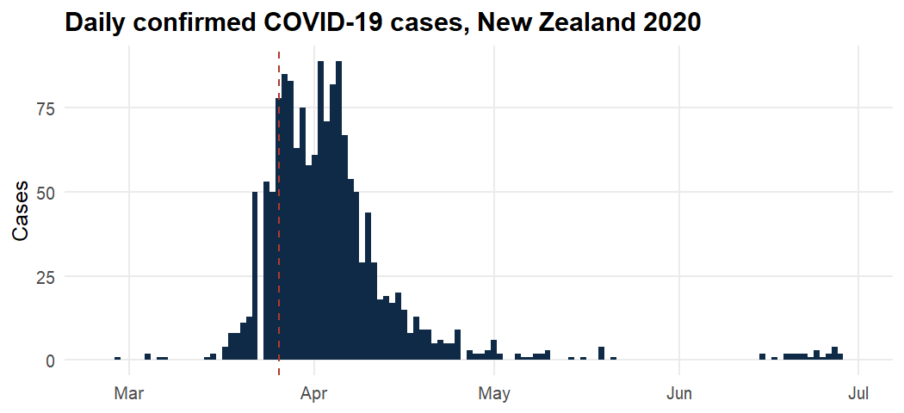
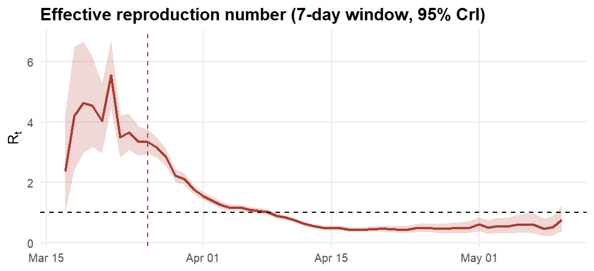
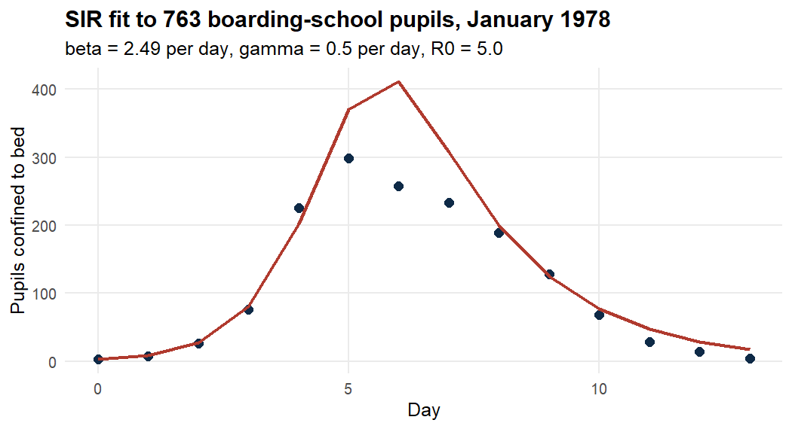
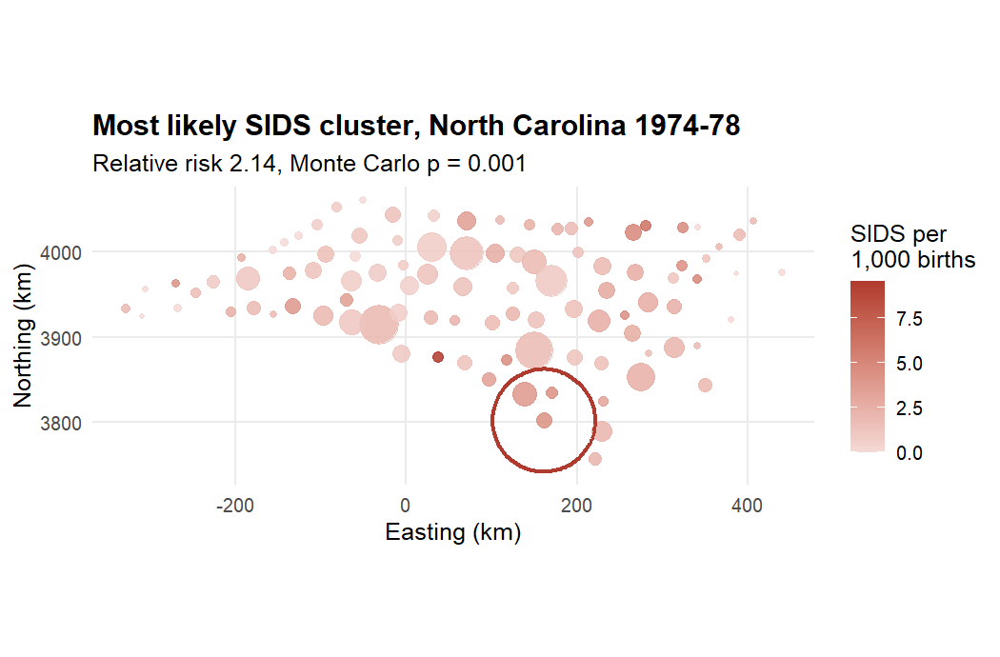
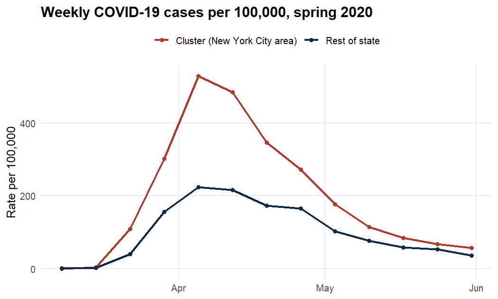
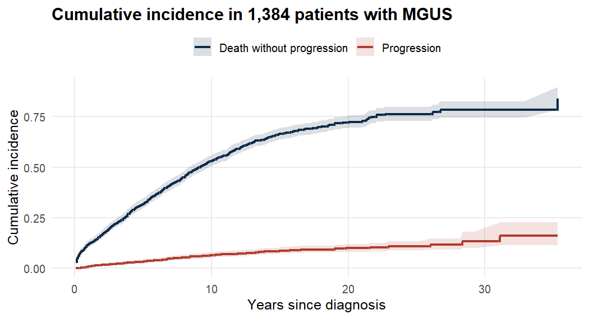
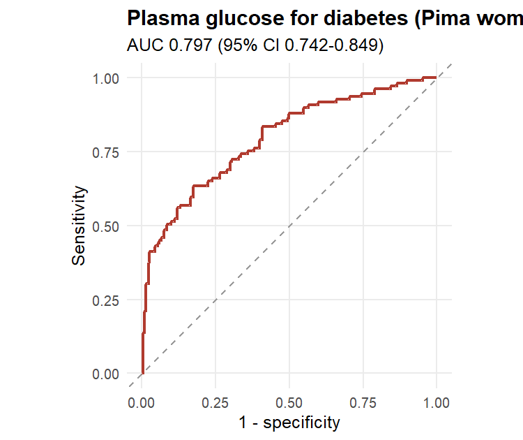
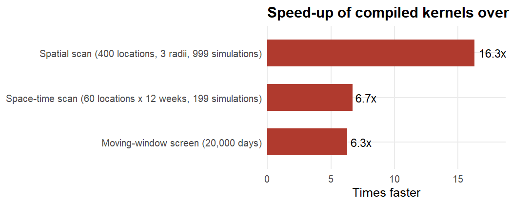

Descriptive, analytic and infectious-disease epidemiology in one tidy workflow: data frames in, tibbles out.
Documentation: https://tidyepidemio.in4metrix.dev/
Epidemiology in R is spread across many packages, each with its own input format and output object: epitools and Epi for 2x2 tables, survival and cmprsk for time-to-event data, EpiEstim for Rt, surveillance for outbreak detection, SaTScan (outside R) for cluster detection. tidyepidemio puts the core methods behind one consistent interface. Every function takes a data frame and unquoted column names and returns a tibble, so results go straight into dplyr, ggplot2 and reports. The slow inner loops run in compiled C++, and results are checked against established reference implementations (see Validation).
- Measures of association: risk, odds and rate ratios, Mantel-Haenszel with Breslow-Day, adjusted logistic, modified-Poisson and Poisson models with weights, robust and cluster errors, effect modification and splines.
- Survival and competing risks: Kaplan-Meier, cumulative incidence with delayed entry and Aalen-Johansen intervals, Cox models, RMST.
- Clinical epidemiology: diagnostic accuracy, ROC and AUC, calibration, decision curves.
- Infectious disease dynamics: epidemic curves, growth rate, Rt, SIR/SEIR fitting and simulation, nowcasting and forecasting.
- Surveillance and clusters: seasonal and moving-window screens, CUSUM, and Kulldorff-type spatial and space-time scan statistics.
A tour with real data
Every example below runs on real, published data shipped with the package or with R. See ?nz_covid_2020, ?ny_covid_counties_2020, ?flu_boarding_school_1978, ?british_doctors and ?nc_sids for sources and licenses.
COVID-19 in New Zealand: from epidemic curve to Rt
New Zealand recorded 1,530 confirmed cases in its first wave and eliminated community transmission after a strict lockdown from 26 March 2020. Early cases were travelers, so any case with no cases in the previous 14 days is treated as imported. With a gamma generation interval (mean about 5 days), epi_rt_gamma() gives a posterior for the time-varying reproduction number.
w <- dgamma(1:14, shape = 2.3, rate = 0.45)
w <- w / sum(w)
nz <- nz_covid_2020
recent <- stats::filter(c(rep(0, 14), nz$cases), rep(1, 14), sides = 1)
nz$imported <- ifelse(recent[14 + seq_len(nrow(nz)) - 1] == 0, nz$cases, 0L)
nz$local <- nz$cases - nz$imported
rt <- epi_rt_gamma(nz, local, weights = w, window = 7, imported = imported)
lockdown <- as.Date("2020-03-26")
p1 <- ggplot(nz, aes(date, cases)) +
geom_col(fill = navy, width = 1) +
geom_vline(xintercept = lockdown, linetype = 2, colour = red) +
labs(title = "Daily confirmed COVID-19 cases, New Zealand 2020", x = NULL, y = "Cases")
p2 <- ggplot(subset(rt, !is.na(rt_mean) & date <= as.Date("2020-05-10")), aes(date, rt_mean)) +
geom_ribbon(aes(ymin = rt_low, ymax = rt_high), fill = red, alpha = 0.2) +
geom_line(colour = red, linewidth = 1) +
geom_hline(yintercept = 1, linetype = 2) +
geom_vline(xintercept = lockdown, linetype = 2, colour = red) +
labs(title = "Effective reproduction number (7-day window, 95% CrI)", x = NULL, y = expression(R[t]))
p1
p2
Rt fell below 1 about two weeks after the lockdown began, in line with published estimates for New Zealand.
Fitting an SIR model: the 1978 boarding-school influenza outbreak
flu <- transform(flu_boarding_school_1978, day = 0:13)
fit <- epi_fit_compartmental(flu, day, in_bed, population = 763, gamma = 0.5)
generics::tidy(fit)
#> # A tibble: 2 × 3
#> term estimate fixed
#> <chr> <dbl> <lgl>
#> 1 beta 2.49 FALSE
#> 2 gamma 0.5 TRUE
ggplot(generics::augment(fit), aes(day)) +
geom_point(aes(y = in_bed), colour = navy, size = 2.5) +
geom_line(aes(y = .fitted), colour = red, linewidth = 1) +
labs(title = "SIR fit to 763 boarding-school pupils, January 1978",
subtitle = sprintf("beta = %.2f per day, gamma = 0.5 per day, R0 = %.1f",
generics::tidy(fit)$estimate[1], generics::tidy(fit)$estimate[1] / 0.5),
x = "Day", y = "Pupils confined to bed")
Smoking and coronary deaths: the British Doctors Study
Poisson regression with log person-years as an offset, adjusting for age.
rr <- rbind(
epi_adjusted_rate_ratio(british_doctors, deaths, person_years, smoker),
epi_adjusted_rate_ratio(british_doctors, deaths, person_years, smoker, adjust = age_group),
epi_adjusted_rate_ratio(british_doctors, deaths, person_years, smoker,
adjust = age_group, robust = "HC1")
)
rr$model <- c("Crude", "Age-adjusted", "Age-adjusted, robust SE")
knitr::kable(rr[c("model", "estimate", "conf_low", "conf_high", "events", "se_type")],
digits = 2, col.names = c("Model", "Rate ratio", "Lower 95%", "Upper 95%", "Deaths", "SE"))| Model | Rate ratio | Lower 95% | Upper 95% | Deaths | SE |
|---|---|---|---|---|---|
| Crude | 1.72 | 1.39 | 2.12 | 731 | model |
| Age-adjusted | 1.43 | 1.15 | 1.76 | 731 | model |
| Age-adjusted, robust SE | 1.43 | 0.99 | 2.05 | 731 | HC1 |
Age confounds the crude association: smokers in this cohort were older on average, so the crude rate ratio (1.72) overstates the effect. After adjustment, smokers have about 43% higher coronary mortality, the classic textbook result.
Finding disease clusters: SIDS in North Carolina
epi_spatial_scan() searches circles of several radii around every county centroid and tests the most likely cluster by Monte Carlo.
set.seed(2024)
cl <- epi_spatial_scan(nc_sids, x_km, y_km, sids_1974, births_1974,
radii = c(30, 60, 90), nsim = 999)
knitr::kable(cl[c("radius", "observed", "expected", "relative_risk", "p_value")], digits = 3)| radius | observed | expected | relative_risk | p_value |
|---|---|---|---|---|
| 60 | 54 | 26.321 | 2.144 | 0.001 |
nc_sids$rate <- 1000 * nc_sids$sids_1974 / nc_sids$births_1974
circle <- data.frame(t = seq(0, 2 * pi, length.out = 200))
circle$x <- cl$center_x + cl$radius * cos(circle$t)
circle$y <- cl$center_y + cl$radius * sin(circle$t)
ggplot(nc_sids, aes(x_km, y_km)) +
geom_point(aes(size = births_1974, colour = rate), alpha = 0.85) +
geom_path(data = circle, aes(x, y), colour = red, linewidth = 1.1) +
scale_colour_gradient(low = "#F4D9D6", high = red, name = "SIDS per\n1,000 births") +
scale_size_area(max_size = 9, guide = "none") +
coord_equal() +
labs(title = "Most likely SIDS cluster, North Carolina 1974-78",
subtitle = sprintf("Relative risk %.2f, Monte Carlo p = %.3f", cl$relative_risk, cl$p_value),
x = "Easting (km)", y = "Northing (km)")
The most likely cluster covers Robeson, Bladen and Columbus counties in the south-east of the state, the excess long noted in this benchmark dataset.
Space-time clusters: COVID-19 across New York State
set.seed(2020)
st <- epi_spacetime_scan(ny_covid_counties_2020, x_km, y_km, week_0308:week_0531, population,
radii = c(20, 50, 100), nsim = 199)
knitr::kable(st[c("radius", "window", "observed", "expected", "relative_risk", "p_value")], digits = 3)| radius | window | observed | expected | relative_risk | p_value |
|---|---|---|---|---|---|
| 50 | 10 | 235666 | 143236 | 2.747 | 0.005 |
weeks <- grep("^week_", names(ny_covid_counties_2020), value = TRUE)
inside <- with(ny_covid_counties_2020, sqrt((x_km - st$center_x)^2 + (y_km - st$center_y)^2) <= st$radius)
trend <- data.frame(
week = as.Date(paste0("2020-", substr(weeks, 6, 7), "-", substr(weeks, 8, 9))),
area = rep(c("Cluster (New York City area)", "Rest of state"), each = length(weeks)),
rate = c(colSums(ny_covid_counties_2020[inside, weeks]) / sum(ny_covid_counties_2020$population[inside]),
colSums(ny_covid_counties_2020[!inside, weeks]) / sum(ny_covid_counties_2020$population[!inside])) * 1e5
)
ggplot(trend, aes(week, rate, colour = area)) +
geom_line(linewidth = 1.1) + geom_point() +
scale_colour_manual(values = c(red, navy), name = NULL) +
labs(title = "Weekly COVID-19 cases per 100,000, spring 2020", x = NULL, y = "Rate per 100,000") +
theme(legend.position = "top")
The cluster is the five boroughs of New York City plus Nassau County, whose weekly rate peaked at over twice that of the rest of the state.
Competing risks: progression of MGUS
Progression to plasma-cell malignancy competes with death in the Mayo Clinic MGUS cohort (survival::mgus2). Treating deaths as censoring would overstate the risk of progression.
m <- survival::mgus2
m$etime <- ifelse(m$pstat == 0, m$futime, m$ptime) / 12
m$event <- ifelse(m$pstat == 0, 2 * m$death, 1)
cif <- rbind(
transform(epi_cumulative_incidence(m, etime, event, cause = 1), outcome = "Progression"),
transform(epi_cumulative_incidence(m, etime, event, cause = 2), outcome = "Death without progression")
)
ggplot(cif, aes(time, cumulative_incidence, colour = outcome, fill = outcome)) +
geom_ribbon(aes(ymin = conf_low, ymax = conf_high), alpha = 0.15, colour = NA) +
geom_step(linewidth = 1) +
scale_colour_manual(values = c(navy, red), name = NULL) +
scale_fill_manual(values = c(navy, red), name = NULL) +
labs(title = "Cumulative incidence in 1,384 patients with MGUS",
x = "Years since diagnosis", y = "Cumulative incidence") +
theme(legend.position = "top")
Diagnostic accuracy: glucose as a test for diabetes
pima <- MASS::Pima.te
pima$diabetes <- as.integer(pima$type == "Yes")
set.seed(1)
auc <- epi_auc_ci(pima, diabetes, glu, bootstrap = 1000)
roc <- epi_roc_curve(pima, diabetes, glu)
ggplot(roc, aes(false_positive_rate, sensitivity)) +
geom_abline(linetype = 2, colour = "grey60") +
geom_step(colour = red, linewidth = 1) +
coord_equal() +
labs(title = "Plasma glucose for diabetes (Pima women)",
subtitle = sprintf("AUC %.3f (95%% CI %.3f-%.3f)", auc$estimate, auc$conf_low, auc$conf_high),
x = "1 - specificity", y = "Sensitivity")
Statistical advice with tidyvisor
With the tidyvisor package installed, tidyvisor() advises on epidemiological data and explains the results of tidyepidemio, as it does for community ecology (tidydiversity) and spatial ecology (tidymapr). The same advice is available here through tep_advise() and tep_interpret(); tidyepidemio does not need tidyvisor.
| Ask | You get |
|---|---|
tep_advise(data, exposure = , outcome = ) (or cases, time, event, test, truth) |
checks of the data and the estimator to run for an outbreak, association, survival, diagnostic, surveillance or causal question, with code that uses your column names |
tep_interpret(result) |
the numbers in plain sentences; After the overall test: what to do next, and what not to; For the paper: a Results sentence, the figure, the table and the Methods (STROBE, STARD) |
d <- data.frame(exposure = rep(0:1, each = 40),
outcome = rep(c(0, 1, 0, 1), c(30, 10, 18, 22)))
tep_interpret(epi_risk_ratio(d, exposure, outcome))
#> ── tidyvisor: what the results show ──────────────────────────────────
#> ── Result ──
#> • The risk ratio is 2.2 (95% CI 1.2 to 4.03). The risk of the outcome is
#> 120% higher in the exposed than in the unexposed.
#> • A crude estimate: confounding is not removed.
#> ── After the overall test ──
#> • Check that the association is not explained by confounding: stratify
#> (epi_mantel_haenszel()) or adjust (epi_adjusted_risk_ratio(),
#> epi_adjusted_odds_ratio()) for the confounders named in advance ...
#> ── For the paper ──
#> • Results: 'The risk ratio for exposure was 2.2 (95% CI 1.2 to 4.03).'
#> • ...Speed
The Monte Carlo scan statistics and the moving-window screen run in compiled C++ (Rcpp). Random numbers are still drawn by R, so results are identical to the original pure-R code for a given seed, a property the test suite checks. Median of three runs on a Windows laptop, R 4.6.2, optimized (-O2) build; reproduce with data-raw/benchmarks.R.
bench <- utils::read.csv("inst/benchmarks/benchmarks.csv")
knitr::kable(transform(bench, r_seconds = round(r_seconds, 2), cpp_seconds = round(cpp_seconds, 2),
speedup = paste0(speedup, "x")),
col.names = c("Task", "Pure R (s)", "C++ (s)", "Speed-up"))| Task | Pure R (s) | C++ (s) | Speed-up |
|---|---|---|---|
| Spatial scan (400 locations, 3 radii, 999 simulations) | 2.45 | 0.15 | 16.3x |
| Space-time scan (60 locations x 12 weeks, 199 simulations) | 0.20 | 0.03 | 6.7x |
| Moving-window screen (20,000 days) | 0.19 | 0.03 | 6.3x |
bench$task <- factor(bench$task, levels = rev(bench$task))
ggplot(bench, aes(speedup, task)) +
geom_col(fill = red, width = 0.6) +
geom_text(aes(label = paste0(speedup, "x")), hjust = -0.15, size = 3.8) +
scale_x_continuous(expand = expansion(mult = c(0, 0.15))) +
labs(title = "Speed-up of compiled kernels over pure R", x = "Times faster", y = NULL)
The compiled kernels also lift the size limits. The space-time scan now handles, for example, 400 locations by 52 weeks with 999 simulations (about 7 seconds, most of it R’s random-number generation), a problem the pure-R version refused outright.
Validation
Estimates are tested against established implementations, not only against hand calculations:
| Method | Reference implementation |
|---|---|
| Mantel-Haenszel odds ratio and interval | stats::mantelhaen.test() |
| Breslow-Day test (Tarone-corrected) | DescTools::BreslowDayTest() |
| Sandwich (HC0, HC1, cluster) standard errors |
sandwich::vcovHC(), sandwich::vcovCL()
|
| Weighted, interaction and spline models | stats::glm() |
| Kaplan-Meier and cumulative incidence with delayed entry | survival::survfit() |
| Paired difference score interval | PropCIs::scoreci.mp() |
| Compiled scan statistics | the original pure-R implementation (bit-identical) |
Implemented scope
- Frequency, binary risk/odds/rate ratios and risk difference, diagnostics, direct/indirect standardization, Mantel-Haenszel pooled odds ratio with Breslow-Day heterogeneity test, adjusted logistic odds ratios (with weights, robust or cluster errors, effect modification and spline terms), robust modified-Poisson risk ratios, Poisson rate ratios, Cox hazard ratios, Kaplan-Meier survival and fixed-horizon risks, attributable fractions, number needed to treat/harm, and Aalen-Johansen competing-risk cumulative incidence. Wilson/binomial, Poisson, diagnostic and standardized-rate confidence intervals are available, along with Fisher exact and Mantel-Haenszel tests and prevalence-adjusted predictive values, empirical ROC curves and AUC bootstrap intervals, exact paired diagnostic comparisons with score intervals, restricted mean survival time, and cohort follow-up with optional administrative censoring.
- Logistic g-computation with optional individual-level percentile bootstrap; ATE propensity weights, weighted risk contrasts and balance diagnostics; IPW contrasts can also use an individual-level refitting bootstrap.
- Equal-width calibration tables, calibration slope/intercepts, Brier score, ROC AUC and decision curves for binary risk predictions.
- Growth, doubling time, serial intervals and t intervals, filled daily/weekly epidemic curves, descriptive renewal Rt, a sliding-window gamma-Poisson posterior Rt, and deterministic/stochastic discrete-time SIR/SEIR simulation, including externally scheduled rates; conditional Monte Carlo renewal forecasts and prediction intervals; and a reporting-delay nowcast with negative-binomial predictive intervals; and rolling-origin renewal forecast backtesting.
- Four recipe feature steps, explicit-history baking for supported steps, a separate explicit-history temporal-feature helper, non-overlapping rolling-origin splits and square-grid spatial block construction and spatial-block cross-validation with optional planar distance buffers; multi-interval WIS and decision-curve net benefit; parsnip specifications for a constant-R renewal model and deterministic SIR/SEIR fits; broom-style generics for results and fits.
- Epicurve, forest, Lexis, Rt and ROC plots; simple and training-only seasonal Fourier Poisson surveillance flags and planar neighboring-location counts, a conditional Poisson circular spatial and prospective space-time scans with global Monte Carlo p-values, and a Poisson CUSUM with optional finite-horizon Monte Carlo threshold calibration.
Important limitations
Most items below are statistical assumptions that no software can remove; they describe when results can be trusted. Version 1.2.0 closed the remaining feature gaps in association, regression, survival, causal, diagnostic and surveillance methods (see NEWS).
- Binary outcomes and exposures must be non-missing 0/1; grouped inputs for core analysis are rejected rather than silently pooled. Wald intervals are approximate; zero cells give undefined estimates unless an explicit
correction(such as 0.5) is requested, which biases towards the null. Standardization intervals use Poisson assumptions. The Breslow-Day heterogeneity test has low power with few or sparse strata. - Adjusted logistic, modified-Poisson and Poisson models assume a correctly specified model, adequate overlap and independent observations or clusters. Sandwich (HC0/HC1, cluster) errors use normal inference and can be unreliable with few clusters. Missing data are not handled. Attributable fractions and numbers needed to treat or harm are unadjusted contrasts. Causal interpretation of any estimate requires an appropriate design and assumptions.
- The Cox model assumes proportional hazards. Kaplan-Meier and cumulative incidence support delayed entry, which must be independent of the event processes, but not covariate adjustment. All survival methods require independent censoring. Restricted mean survival time is limited to observed follow-up; its Greenwood Wald interval may be unreliable with heavy censoring or small samples.
- G-computation and propensity weighting require consistency, positivity, exchangeability, appropriate temporal ordering and correct model specification; neither proves those assumptions. Bootstrap intervals in
epi_weighted_effect()hold the supplied weights fixed (usually conservative for inverse-probability weights);epi_ipw()re-estimates the propensity model in each resample. Failed or warned bootstrap fits are omitted (more than 10% abort); conditioning on successful fits may bias intervals. -
epi_rt()is a descriptive renewal ratio.epi_rt_gamma()adds a conditional gamma-Poisson posterior and optional imported counts, but neither method directly corrects for reporting delays, uncertain generation intervals or right censoring.epi_nowcast()separately models reporting delays given a fixed known delay distribution; it cannot recover never-reported infections. - The parsnip renewal fit estimates a single constant R using a conditional Poisson mean, known generation weights, no imports and point forecasts. The SIR/SEIR fit estimates beta by least squares with fixed population, gamma, progression rate (SEIR) and initial compartment values; estimation can be weakly identified. Neither accounts for observation error or changing parameters. Renewal forecast intervals assume fixed future R, no imports and no observation model, and are not guaranteed calibrated.
- SIR/SEIR simulation is a discrete-time approximation, not a continuous ODE solver. Epidemiological model outputs are not validated for operational decisions.
- Recipe lag/rolling/exposure steps assume sorted, ungrouped data and do not retain history between training and new data;
epi_bake_history()supplies explicit history for one series at a time. Current-row windows and later assessment outcomes can leak information. Renewal backtests assume counts were available without delay; real surveillance should use data vintages. - Spatial CV uses user-provided or square-grid blocks with point-to-point buffers on planar projected coordinates. The spatial and space-time scans assume a homogeneous Poisson null (and, for space-time, constant risk over time) and do not adjust for confounding or reporting bias.
- Surveillance screens support negative binomial baselines for overdispersion and multiple-testing adjustment across screened rows, and CUSUM calibration supports overdispersed nulls and several independent series. All still assume a correctly specified, outbreak-free baseline and ignore reporting delays and baseline parameter uncertainty. An alert is not an outbreak diagnosis.
- Risk-prediction calibration, discrimination and decision curves should be evaluated on independent validation data and do not account for clustering. AUC intervals do not refit models or correct optimism. Paired diagnostic comparisons assume an accurate shared reference standard. The yardstick
net_benefit()metric returns one threshold per call by design; useepi_decision_curve()for many thresholds. - Combining epidemiological subclasses with plain data frames is rejected; summarise, group_modify and rowwise conversion can drop class metadata, and joins keep the left table’s metadata.
- Longitudinal (time-varying) causal methods and fully Bayesian outbreak models are outside the scope of this package.
- Tests cover documented behavior, reference implementations and key edge cases, not every data type, dependency version or platform.
Implementation guide and workflows
The source tree contains inst/guide/implementation.md, a milestone and limitations audit, inst/guide/validation-plan.md, an unexecuted external validation plan, and runnable synthetic workflows under inst/examples/. A GitHub Actions multi-platform check configuration is included in the source and runs on every push and pull request. After installation, locate these with system.file("guide", package="tidyepidemio") and system.file("examples", package="tidyepidemio").
Development
roxygen2::roxygenise()
testthat::test_local()